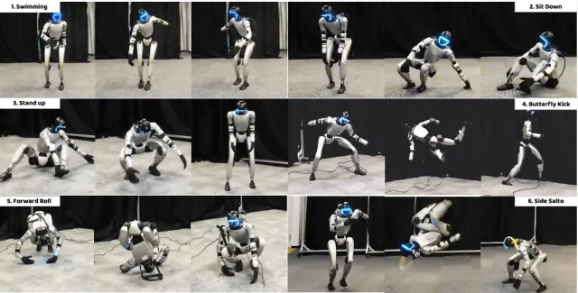
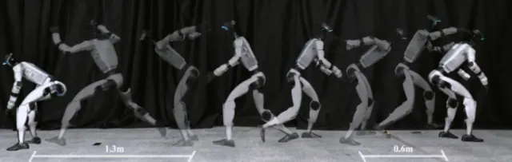
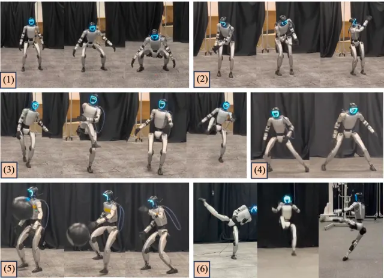
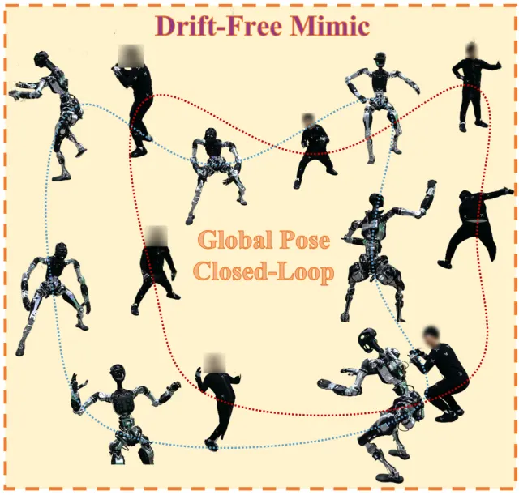

Behavior Foundation Model

Behavior Foundation Model for Humanoid Robots ICRA 2026

AdaMimic: Towards Adaptable Humanoid Control via Adaptive Motion Tracking ICRA 2026

UniTracker: Learning Universal Whole-Body Motion Tracker for Humanoid Robots RAL 2026

CLOT: Closed-Loop Global Motion Tracking for Whole-Body Humanoid Teleoperation Under Review